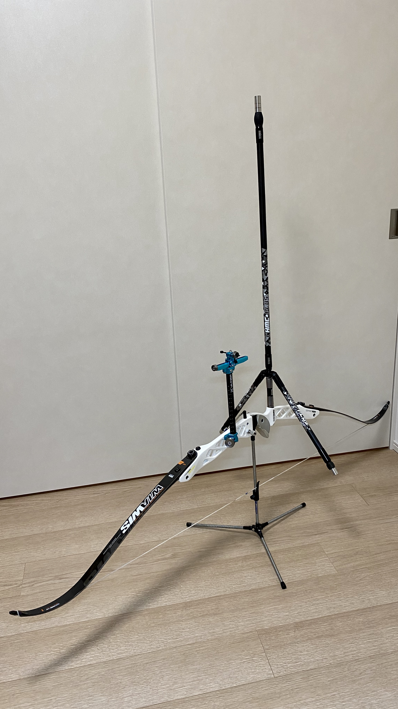
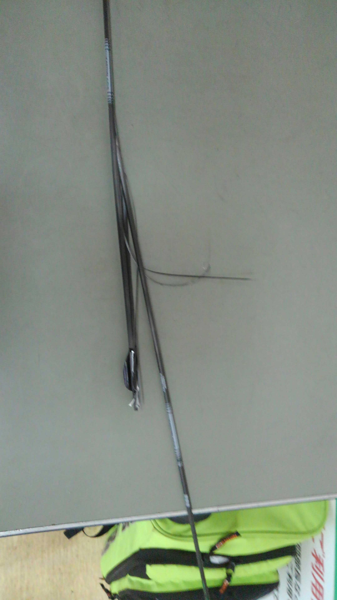
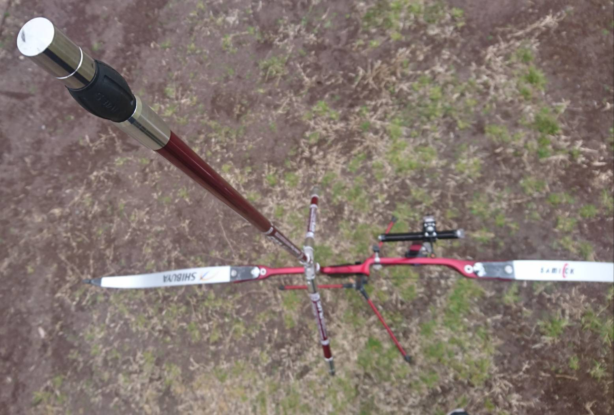
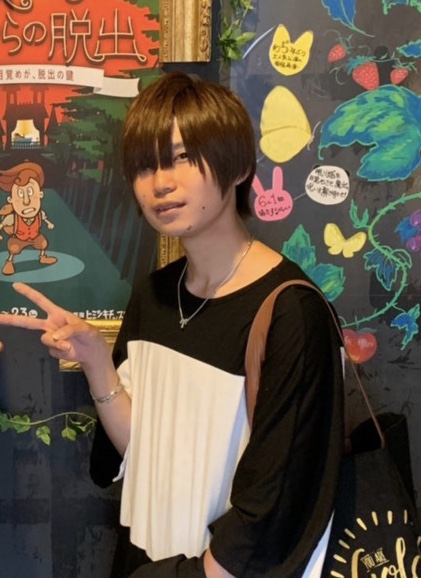

49期(2019年入部)
記録小委員・内記録
磯道 駿介
所属：文科二類
出身：東京都

技術
伊藤 学
内定：工学部 マテリアル工学科
出身：埼玉県・開成高校
特に豚骨ラーメンが好きです！
競技小委員
塩谷 海
内定：文学部
出身：東京都・桜蔭高校
元気
ユニ責
白崎 仁
内定：法学部
出身：神奈川県・聖光学院
記録小委員
銭 優希
内定：教養学部 統合自然科学科
出身：東京都・桜蔭高校
すこやか

駒責
津島 彰悟
所属：理学部 生物学科
出身：東京都・武蔵高校
グリーンアーチェリー
財補・管財小委員
土屋 智
所属：文科三類
出身：東京都・駒場東邦高校

新歓・国公立委員
外山 修士
内定：薬学部
出身：静岡県・韮山高校
新歓・競技小委員
平田 裕也
所属：理科一類
出身：福井県・藤島高校
貧弱

備品責
山田 舜
内定：工学部 マテリアル工学科
出身：富山県・富山中部高校
マカロニえんぴつハマりました